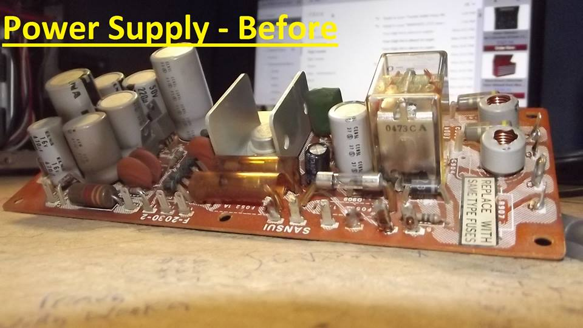
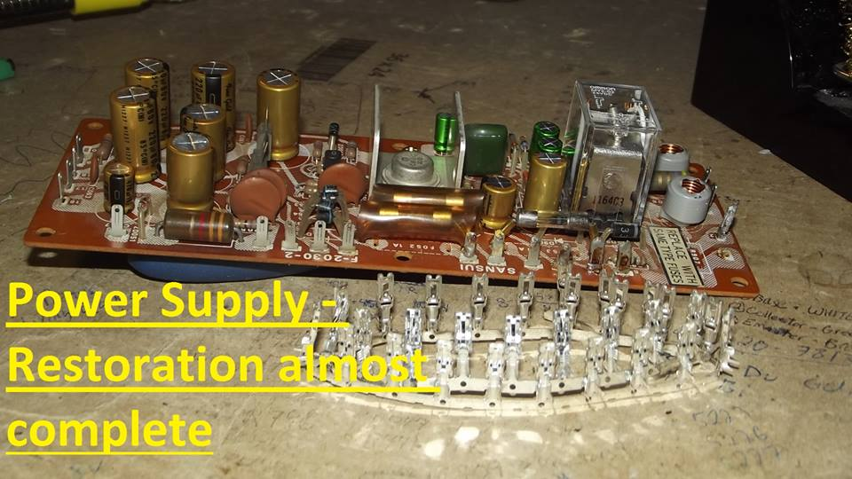
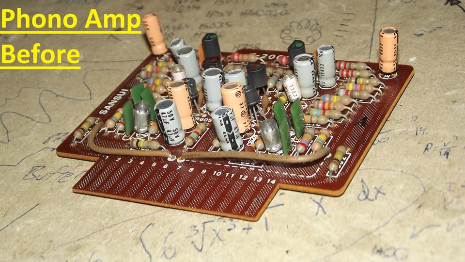
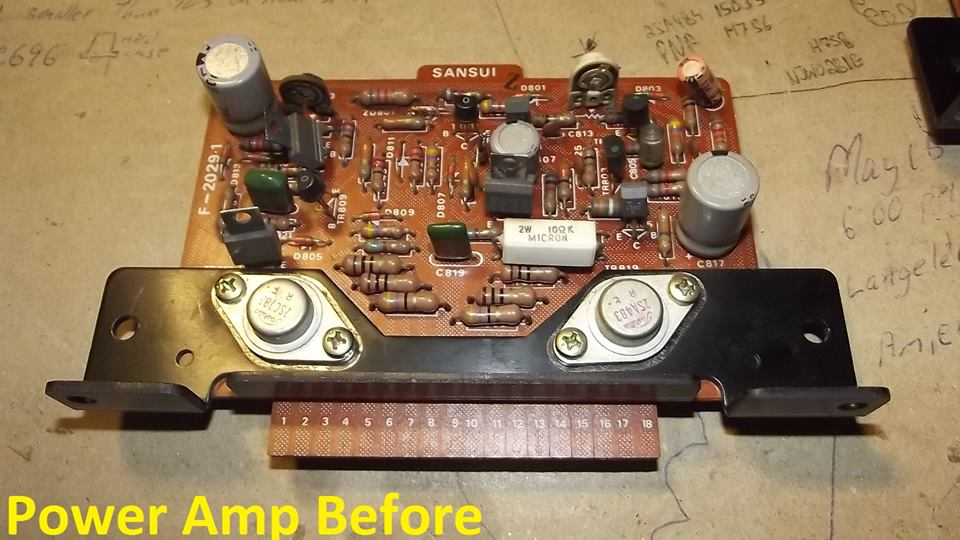
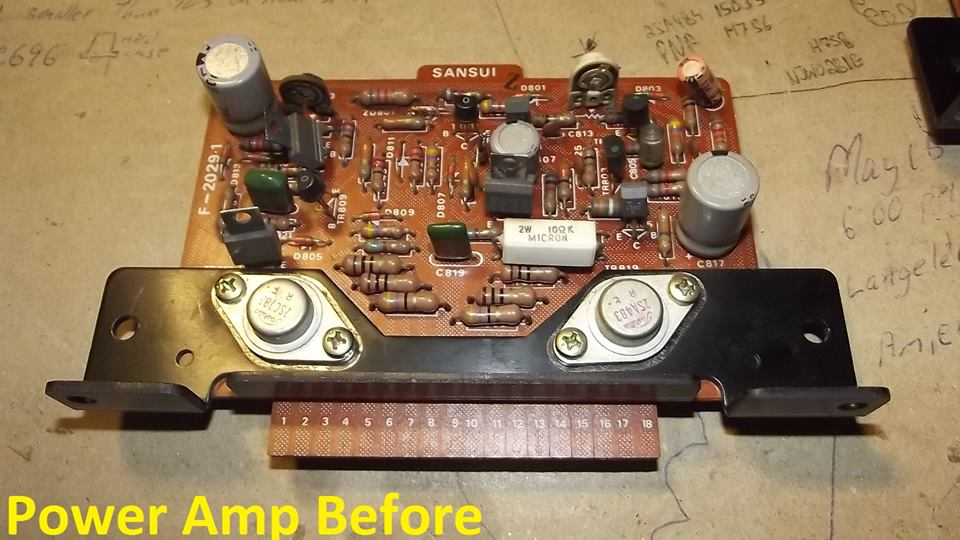
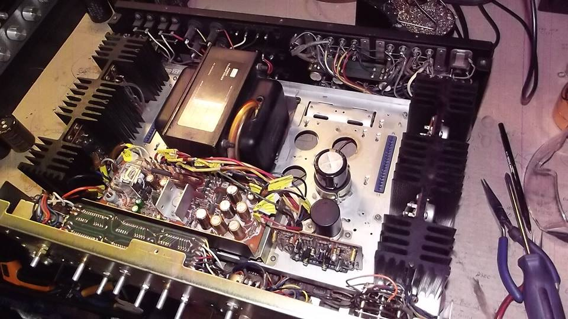
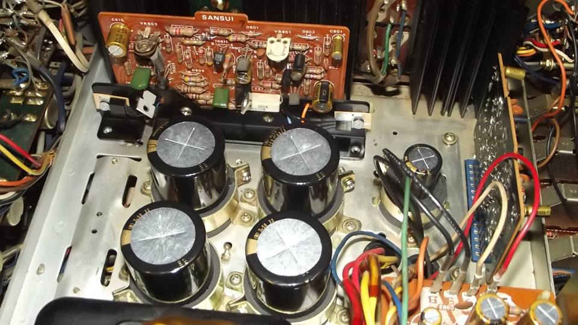
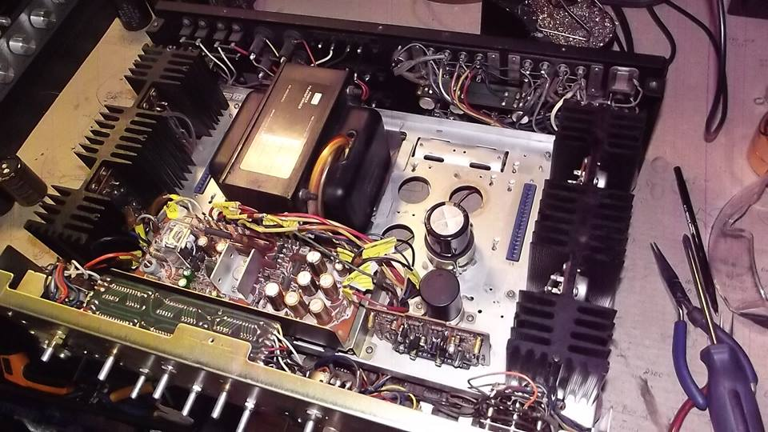
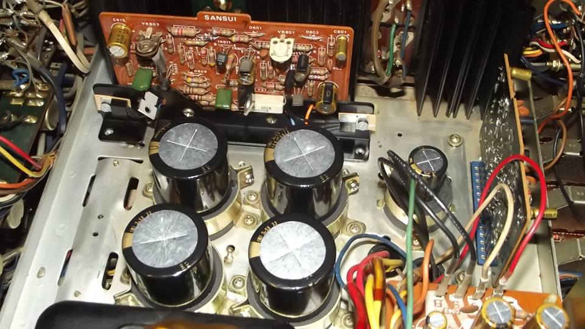

This is a restoration of a Sansui AU9500, where all of the electrolytic capacitors were changed, the transistors (preamp and amplifier section), relays, some wires/terminals along with more technical service and proper integration of new parts
   .
.
 




Please click here to return to the HOMEPAGE